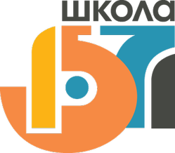

Государственное бюджетное общеобразовательное учреждение города Москвы "Школа № 1571"
Северо-Западный административный округ
О школе
ПОЛНОЕ НАИМЕНОВАНИЕ ОБРАЗОВАТЕЛЬНОЙ ОРГАНИЗАЦИИ:
Государственное бюджетное общеобразовательное учреждение города Москвы "Школа № 1571"
СОКРАЩЕННОЕ НАИМЕНОВАНИЕ ОБРАЗОВАТЕЛЬНОЙ ОРГАНИЗАЦИИ:
ГБОУ Школа № 1571
ДАТА СОЗДАНИЯ ОБРАЗОВАТЕЛЬНОЙ ОРГАНИЗАЦИИ:
Школа основана в 1972 году.
ГБОУ Лицей №1571 образован в 2005 году. Его девизом стали слова М.В.Ломоносова: «Учись во благо себя и Отечества!».
Слияние образовательных учреждений 27.08.2012
Реорганизовано в форме слияния на основании приказа ДОгМ №489 от 29.06.12 "О реорганизации..."
В 2017 году ГБОУ Лицей №1571 переименован в ГБОУ Школа №1571.
Своим учащимся школа предлагает следующие направления:
- физико-математическое;
- химико – биологическое;
- физико – химическое;
- социально - правовое;
- социально – экономическое;
- социально - гуманитарное;
- информационно-технологическое;
- медицинский класс;
- инженерный класс;
- кадетский класс;
- математическая вертикаль;
- ИТ-класс;
- медиакласс.